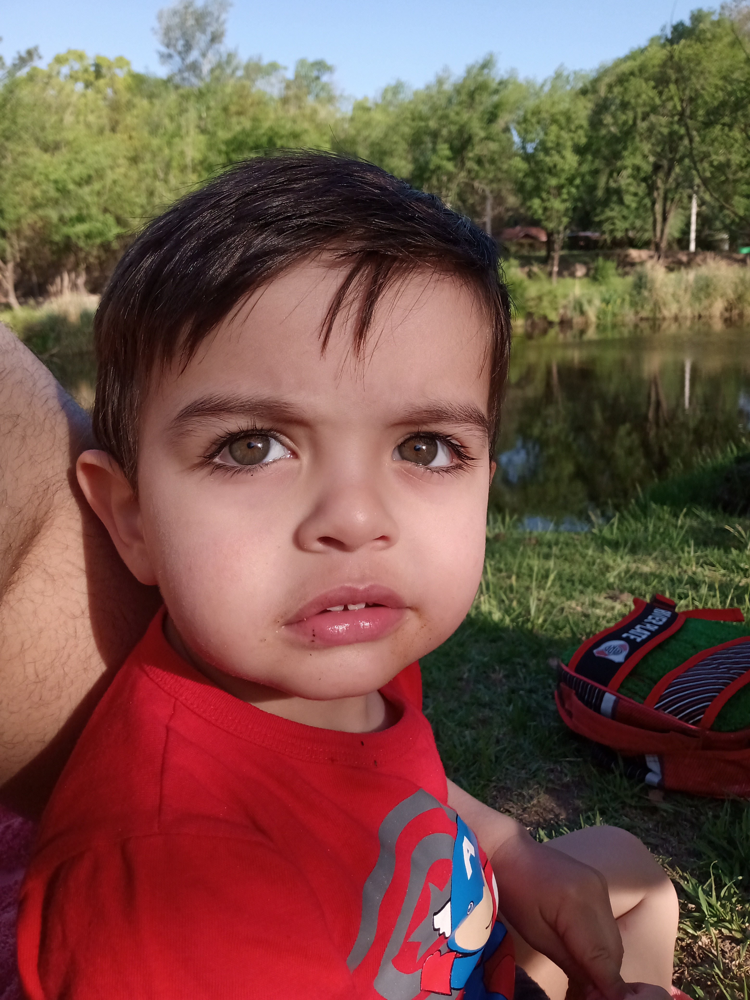

la vida de Bruno
Bruno nació el 3 de octubre de 2020 en la vibrante ciudad de Buenos Aires, Argentina, como un miembro de una familia con amor y música. Nuestros padres, Lucas y Micaela, supieron que su hijo era especial. Este es un gran momento para él, Bruno está particularmente interesado en los ritmos y melodías, particularmente en las alabanzas, que resuenan en su casa. A Bruno le encantaba pasar tiempo en la plaza local, donde jugaba y observaba el mundo a su alrededor. Pero lo que realmente captaba su atención eran los sonidos: el golpeteo de los pies en el pavimento, el murmullo de las conversaciones y, sobre todo, el ritmo constante que parecía latir en el corazón de la ciudad.

A medida que Bruno crecía, su amor por la música es ahora más fuerte. Empezó a tocar la batería, un instrumento que le permitía expresar su pasión por el ritmo de una manera que ningún otro instrumento podía. Pronto, tu talento se hace evidente en todo lo que has aprendido. Bruno no sólo consulta la batería, sino también una de las baterías más grandes del mundo.

Con el apoyo incondicional de sus padres, Bruno dedicó un perfecto su arte. Pasaba horas practicando, golpeando los tambores con una determinación y una pasión que siempre inspira. A parte de la corta edad, Bruno demuestra una dedicación y un compromiso con la música que es superior a todos sus años. Hoy, Bruno sigue persiguiendo el sueño con su misma pasión y determinación que siempre ha mostrado. Incluso hoy es joven, tu talento y tu amor por la música siempre están ahí para ti. Y mientras sigue su camino hacia la grandeza, Bruno siempre grabará sus raíces en Buenos Aires, la ciudad que le enseñó a amar el ritmo ya soñar en grande.